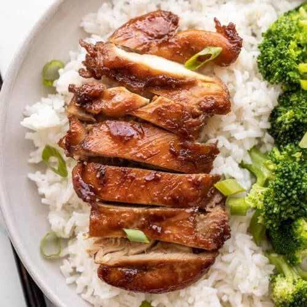

Chicken Teriyaki recipe
Chicken Teriyaki

This is a simple, easy to make Chicken Teriyaki recipe
Ingredients:
2 ¼ cups soy sauce
¾ cup sugar
1 teaspoon ground black pepper
1 tablespoon cornstarch
1 (20 ounce) can pineapple chunks in juice, drained, juice reserved
1 onion, chopped
3 cloves garlic, minced
1 (2 inch) piece fresh ginger root, peeled and chopped
4 chicken thighs
4 chicken drumsticks
4 chicken wings
salt and ground black pepper to taste
Steps:
- Preheat an oven to 350 degrees F (175 degrees C).
- Stir the soy sauce, sugar, 1 teaspoon of black pepper, cornstarch, and 1/2 cup of the reserved pineapple juice together in a saucepan until the sugar is completely dissolved; add the onion, garlic, and ginger. Bring the mixture to a boil and cook
until the sauce thickens, about 5 minutes.
- Thoroughly rinse the chicken thighs, drumsticks, and wings; pat dry with paper towels. Arrange the chicken in a baking dish; season with salt and pepper.
- Bake in the preheated oven for 15 minutes. Pour the pineapple chunks around the chicken pieces; brush the chicken liberally with the sauce and return to the oven for 30 minutes, brushing with sauce every 10 minutes or so.
Go back to recipe listing